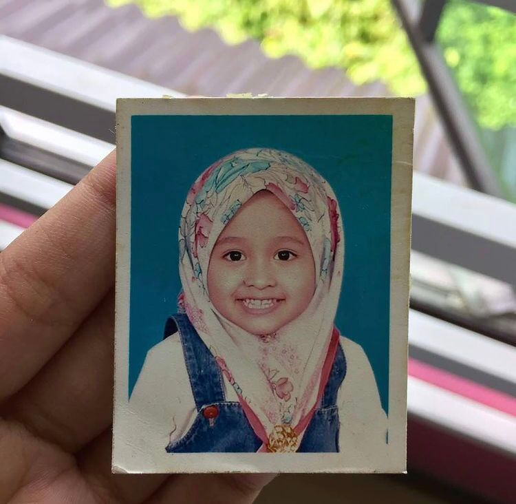
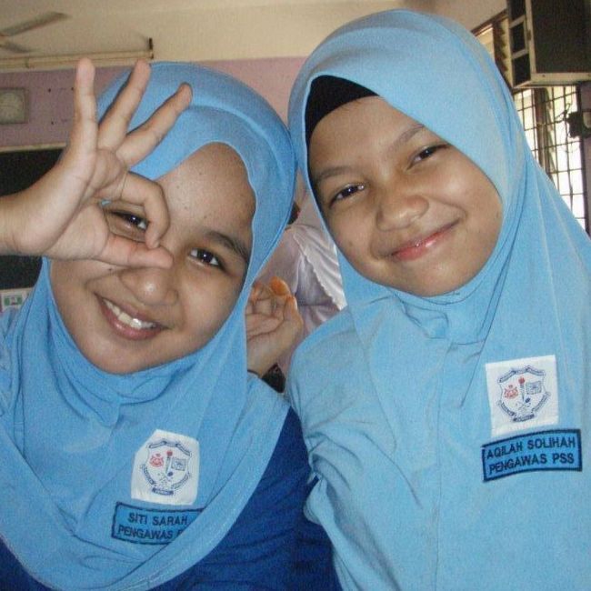
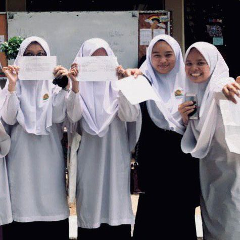
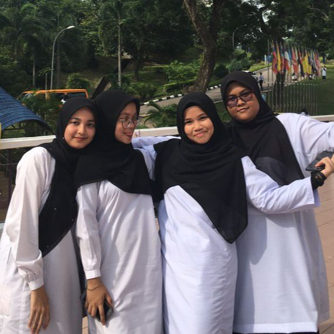

⁑ So here is my education starting from kindergarten until university. Tadika Tengku Anis 1 was my school when I was a kid, starting five to six years old. My parents sent me to the kindergarten because it is near our house and the kindergarten is very well-known, and the teachers are quite good at teaching. At my kindergarten, there is also a playground provided so that the students will love to go to the school and not be bored when they go to the school.

Kindergarten - Tadika Tengku Anis 1, Kota Bharu, Kelantan
Location of Tadika Tengku Anis 1, Kota Bharu
⁑ When I was seven years old until 12 years old, I studied at Sekolah Kebangsaan Zainab 1, in Kota Bharu. I love this school because the teachers and friends are very supportive and kind. Besides, my upper sisters also studied here when they were primary. During the Ujian Pencapaian Sekolah Rendah (UPSR), I have got 3As and 2Bs for my examination. Even though I did not achieve the target, I am so happy with my result. Besides, my teachers there are very supportive.

Primary School - Sekolah Kebangsaan Zainab 1, Kota Bharu, Kelantan
Location of Sekolah Kebangsaan Zainab 1, Kota Bharu
⁑ Starting from 13 years old, which is lower level, my parents sent me to Maahad Perempuan Pasir Pekan, a girls' school near Pasir Pekan. It takes 30 minutes to arrive at the school every day. I enjoy the surroundings very much because there is no boy. I studied at this school until I was 17 years old and took my Sijil Pelajaran Malaysia there. I love this school because they provide their students with many facilities.

Secondary School - Maahad Perempuan Pasir Pekan, Kota Bharu, Kelantan
Location of Maahad Muhammadi Perempuan Pasir Pekan
⁑ After finishing my Sijil Pelajaran Malaysia, I got an offer to study at University Technology Mara Kelantan, in an Information Management course, for five semesters, which takes two and a half to finish the study. Then, right now, I am already in the last semester, and I am so shocked that I can make it to the end without any problems in studying. I have gained many friends, and my lecturers are also supportive and caring.

University - University Technology Mara, Machang Campus, Kelantan